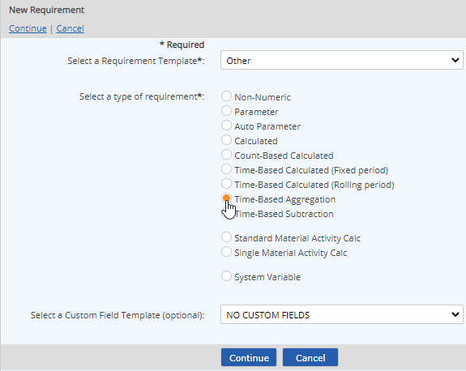
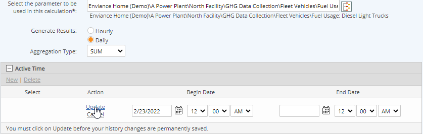

Select Time-Based Aggregation for the type.

To apply user-defined custom fields, select a Custom Field Template to apply. See Custom Field Templates.
Enter a Name.
You can add translated values for localization by clicking on the language symbol  .
.
In the Requirement Source section you can further define the requirement driver by selecting the Specific Citation and specifying a Periodicity. See Field Definitions for Calculated Requirements.
Other optional fields include:
Active Date/Inactive Date: The begin and end dates that a requirement applies (optional)
Description: General description of requirement
UOM: Unit of measure
Precision: Number of places to the right of the decimal point to display
Calculation purpose: Describe what you want to accomplish in the formula.
In the Description section choose the following settings:
Select the parameter to use in the calculation: Click the "select" button next to the box, then find and select the parameter.
Generate Results: Select the frequency to generate result: Hourly or Daily.
Aggregation Type: Select the type of aggregation from the list. (See Aggregation Types.)
The resulting calculation will be a simple aggregate, of the form AVG ([Parameter]).
Select the Aggregation Type from the list. (See Aggregation Types.)
Click the plus sign (+) in the Active Time bar to define the time period for the aggregation. Click New to add an active date.
Enter the Begin Date. The Begin Date (required) is the date to begin calculating from. Aggregation is inclusive of the Begin Date and exclusive of the End Date, if specified.
Click Update to save the value history.

Other options include:
Expected Frequency: Can be used to produce a data warning if expected data is missing. The expected frequency is defined as the number of data points expected per day. A Begin Date must be set.
Limits: Regulatory and internal limits may be set in order to produce data warning when limits are exceeded. See Setting Regulatory Limits.